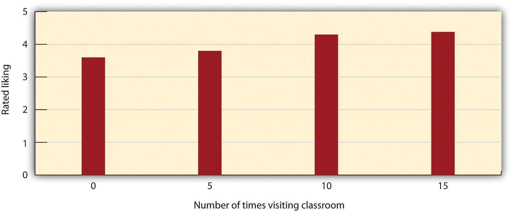
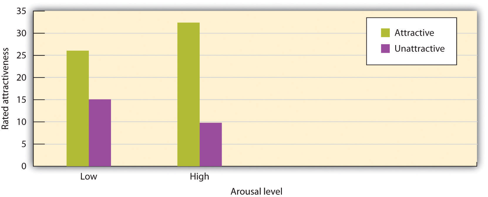
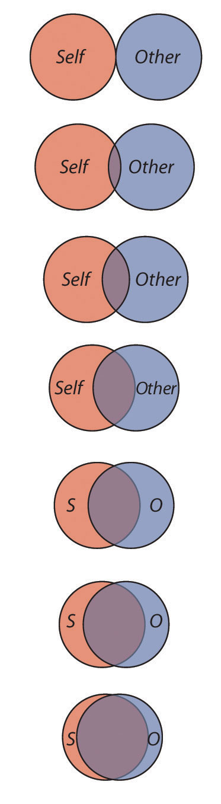
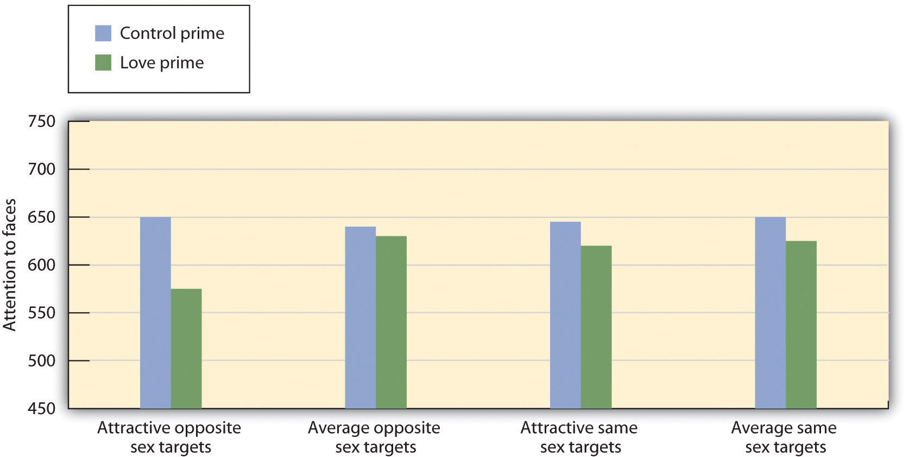

Frank and Anita Milford are in some ways your average couple: They met in 1926 at a YMCA dance, married in 1928, had two children, and lived together in the same a three-bedroom house their entire lives. But unlike many other couples, Frank and Anita’s marriage lasted—in fact, it really lasted. In May of 2008, the pair equaled the record for being Britain’s longest married couple—80 years of marriage.
To celebrate their 80th wedding anniversary, Frank (100 years old), and Anita (99 years old) spent a quiet weekend together—pretty typical of most of their days.
“At our age that’s all you need,” said Mr. Milford. “Just us together, no big fuss.”
Frank and Anita indicated that one of the secrets to a successful marriage was to “share a little kiss and cuddle every night before bed. It’s our golden rule.”
The Milfords believe that making time for one another is vital to keeping the relationship healthy. They claimed that respect and a process of “give and take” are great ways to sustain a relationship.
“We do everything together even after nearly 80 years.”
Like most couples who have been together for a number of years, there are still some cross words and everyday squabbles. Regardless, their relationship remains one that is loving and healthy.
Source: Miller, V. (2008, 24 May). Britain's longest married couple celebrate a quiet 80th anniversary. The Telegraph. Retrieved from http://www.telegraph.co.uk/news/uknews/2020233/Britains-longest-married-couple-celebrate-a-quiet-80th-anniversary.html.
In prior chapters, we have considered the basic processes of person perception. In doing so, we have focused primarily on our perceptions of people we do not know very well and with whom we do not have many social connections. But people also desire and need to develop close relationships with others, particularly those others who help us engage in reproduction and child rearing and who provide social supportThe comfort that we receive from the people around us—for instance, our family, friends, classmates, and coworkers.—the approval, assistance, advice, and comfort that we receive from those with whom we have developed stable positive relationships (Taylor, 2007).Taylor, S. E. (2007). Social support. In H. S. Friedman & R. C. Silver (Eds.), Foundations of health psychology (pp. 145–171). New York, NY: Oxford University Press.
Close relationshipsRelationships between people that are characterized by loving, caring, commitment, and intimacy. are relationships between people that are characterized by loving, caring, commitment, and intimacy—such as those between adult friends, dating partners, lovers, and married couples (Clark & LeMay, 2010; Hendrick & Hendrick, 2000).Clark, M. S., & Lemay, E. P., Jr. (2010). Close relationships. In S. T. Fiske, D. T. Gilbert, & G. Lindzey (Eds.), Handbook of social psychology (5th ed., Vol. 2, pp. 898–940). Hoboken, NJ: John Wiley & Sons; Hendrick, C., & Hendrick, S. S. (Eds.). (2000). Close relationships: A sourcebook. Thousand Oaks, CA: Sage. These relationships are determined by biological, evolutionary, individual, and cultural factors. Successful close relationships involve the positive influence of cognitive variables, including perceptions of similarity with the other, interdependence, commitment, and the incorporation of other into the self-concept, as well as affective variables, including attachment, intimacy, and commitment. Our close relationships help us meet the goals of self-concern and other-concern.
In this chapter, we will consider the benefits that come from our close relationships, the principles that lead people to become attracted to others, and the variables that help create stable, healthy, and happy close relationships. In addition to being vitally important to us in an evolutionary sense (effective child rearing requires committed and effective parents), close relationships bring us health and happiness when we are able to create successful ones; they may produce a profound sense of loneliness and sadness when we are not.
People are well aware of the importance of having other people in their lives. When they are asked what makes them happy, people of all ages indicate that having friendships and good relationships with others is what they care about the most (Baumeister & Leary, 1995).Baumeister, R., & Leary, M. (1995). The need to belong: Desire for interpersonal attachments as a fundamental human motivation. Psychological Bulletin, 117, 497–529. And our self-esteem is in large part determined by how much we feel that we are accepted by others (Leary, 2005).Leary, M. R. (2005). Sociometer theory and the pursuit of relational value: Getting to the root of self-esteem. European Review of Social Psychology, 16, 75–111. Self-esteem rises when we feel accepted and valued by others and falls when we do not (Leary & Cox, 2008).Leary, M. R., & Cox, C. B. (Eds.). (2008). Belongingness motivation: A mainspring of social action. New York, NY: Guilford Press. People who do not feel that they are able to develop the types and quality of social relationships that they would prefer to have are lonely—a highly unpleasant and potentially unhealthy state (Cacioppo & Patrick, 2008).Cacioppo, J. T., & Patrick, W. (2008). Loneliness: Human nature and the need for social connection. New York, NY: W. W. Norton.
Close relationships also keep us healthy. People who do not have adequate social support in the form of friends and family have more physical and mental health problems than do those with adequate social relationships (Cacioppo, Hawkley, & Bernston, 2003; Cacioppo et al., 2002).Cacioppo, J. T., Hawkley, L. C., & Bernston, G. G. (2003). The anatomy of loneliness. Current Directions in Psychological Science, 12(3), 71–74; Cacioppo, J. T., Hawkley, L. C., Crawford, E., Ernst, J. M., Burleson, M. H., Kowalewski, R. B,…Berntson, G. G. (2002). Loneliness and health: Potential mechanisms. Psychosomatic Medicine, 64(3), 407–417.
In summary, our close relationships make us happy and healthy, and the lack of them leaves us lonely and hurting. We experience higher self-efficacy, self-esteem, and positive mood when we believe that our friends and partners are responding to us supportively and with a concern for our needs and our own welfare. Our relationships with others help us buffer the negative effects of stress, avoid unhealthy behaviors, and cope with serious physical illness. And our close relationships allow us to express our fundamental desires to reach out and respond to other people.
When we say that we like or love someone, we are experiencing interpersonal attractionThe strength of our liking or loving for another person.—the strength of our liking or loving for another person. Although interpersonal attraction occurs between friends, family members, and other people in general, and although our analysis can apply to these relationships as well, our primary focus in this chapter will be on romantic attraction—for instance, between boys and girls, between men and women, and between people in same-sex relationships. There is a large literature on the variables that lead us to like others in our initial interactions with them, and we’ll review the most important findings here (Sprecher, Wenzel, & Harvey, 2008).Sprecher, S., Wenzel, A., & Harvey, J. (2008). Handbook of relationship initiation. New York, NY: Psychology Press. Retrieved from http://search.ebscohost.com/login.aspx?direct=true&db=psyh&AN=2008-09972-000&loginpage=Login.asp&site= ehost-live
Although it may seem inappropriate or shallow to admit it, and although it is certainly not the only determinant of liking, people are strongly influenced, at least in initial encounters, by the physical attractiveness of their partners (Swami & Furnham, 2008).Swami, V., & Furnham, A. (2008). The psychology of physical attraction. New York, NY: Routledge/Taylor & Francis Group. Elaine Walster and her colleagues (Walster, Aronson, Abrahams, & Rottman, 1966)Walster, E., Aronson, V., Abrahams, D., & Rottmann, L. (1966). Importance of physical attractiveness in dating behavior. Journal of Personality and Social Psychology, 4(5), 508–516. arranged a field study in which college boys and girls were randomly paired with one another at a “computer dance.” After the partners had danced and talked for a couple of hours, they were interviewed separately about their own preferences and characteristics as well as about their perceptions of their date. Walster and her colleagues found that the only important determinant of participants’ liking for their date was his or her physical attractiveness. None of the other characteristics—even the perceived intelligence of the partner—mattered.
Perhaps this finding doesn’t surprise you too much, given the importance of physical attractiveness in our culture. Movies and TV shows feature attractive people, TV ads use attractive people to promote their products, and we spend millions of dollars each year to make ourselves look more attractive. Even infants who are only a year old prefer to look at faces that adults consider attractive rather than at unattractive faces (Langlois, Ritter, Roggman, & Vaughn 1991).Langlois, J. H., Ritter, J. M., Roggman, L. A., & Vaughn, L. S. (1991). Facial diversity and infant preferences for attractive faces. Developmental Psychology, 27, 79–84.
People who are attractive are also seen as having a variety of positive characteristics, and these traits are activated quickly and spontaneously when we see their faces (Olson & Marshuetz, 2005; van Leeuwen & Macrae, 2004).Olson, I. R., & Marshuetz, C. (2005). Facial attractiveness is appraised in a glance. Emotion, 5(4), 498–502; van Leeuwen, M. L., & Macrae, C. N. (2004). Is beautiful always good? Implicit benefits of facial attractiveness. Social Cognition, 22(6), 637–649. Attractive people are seen as more sociable, altruistic, and intelligent than their unattractive counterparts (Griffin & Langlois, 2006).Griffin, A. M., & Langlois, J. H. (2006). Stereotype directionality and attractiveness stereotyping: Is beauty good or is ugly bad? Social Cognition, 24(2), 187–206. Attractive people also have more choices of sex partners (Epstein, Klinkenberg, Scandell, Faulkner, & Claus, 2007),Epstein, J., Klinkenberg, W. D., Scandell, D. J., Faulkner, K., & Claus, R. E. (2007). Perceived physical attactiveness, sexual history, and sexual intentions: An internet study. Sex Roles, 56(1–2), 23–31. are more likely to be offered jobs (Dubois & Pansu, 2004),Dubois, M., & Pansu, P. (2004). Facial attractiveness, applicants’ qualifications, and judges’ expertise about decisions in preselective recruitment. Psychological Reports, 95(3, Pt. 2), 1129–1134. and may even live longer (Henderson & Anglin, 2003).Henderson, J. J. A., & Anglin, J. M. (2003). Facial attractiveness predicts longevity. Evolution and Human Behavior, 24(5), 351–356.
Although it is sometimes said that “beauty is in the eyes of the beholder” (i.e., that each person has his or her own idea about what is beautiful), this is not completely true. There is good agreement among people, including children, and within and across cultures, about which people are most physically attractive (Berry, 2000; Ramsey, Langlois, Hoss, Rubenstein, & Griffin, 2004).Berry, D. S. (2000). Attractiveness, attraction, and sexual selection: Evolutionary perspectives on the form and function of physical attractiveness. Advances in Experimental Social Psychology, 32, 273–342; Ramsey, J. L., Langlois, J. H., Hoss, R. A., Rubenstein, A. J., & Griffin, A. M. (2004). Origins of a stereotype: Categorization of facial attractiveness by 6-month-old infants. Developmental Science, 7(2), 201–211. If your instructor asked the students in your class to rate each other on their attractiveness, there would be general agreement among them on which students are most and least attractive. This agreement is in part due to shared norms within cultures about what is attractive, but it is also due to evolutionary predispositions to attend to and be influenced by specific characteristics of others.
Leslie Zebrowitz and her colleagues have extensively studied the tendency for both men and women to prefer facial features that have youthful characteristics (Zebrowitz, 1996).Zebrowitz, L. A. (1996). Physical appearance as a basis of stereotyping. In C. N. Macrae, C. Stangor, & M. Hewstone (Eds.), Stereotypes and stereotyping (pp. 79–120). New York, NY: Guilford Press. These features include large, round, and widely spaced eyes, a small nose and chin, prominent cheekbones, and a large forehead. Zebrowitz has found that individuals who have youthful-looking faces are more liked, are judged as warmer and more honest, and also receive other positive outcomes. Parents give baby-faced children fewer chores and punishments, and people with young-looking faces are also required to pay lower monetary awards in courtroom trials (Zebrowitz & McDonald, 1991).Zebrowitz, L. A., & McDonald, S. M. (1991). The impact of litigants’ baby-facedness and attractiveness on adjudications in small claims courts. Law and Human Behavior, 15(6), 603–623. On the other hand, baby-faced individuals are also seen as less competent than their more mature-looking counterparts (Zebrowitz & Montpare, 2005).Zebrowitz, L. A., & Montepare, J. M. (2005). Appearance does matter. Science, 308(5728), 1565–1566.

Leonardo DiCaprio may be popular in part because he has a youthful-looking face.
Image courtesy of Colin Chou, http://commons.wikimedia.org/wiki/File:LeonardoDiCaprioNov08.jpg.
The preference for youth is found in our perceptions of both men and women but is somewhat stronger for our perceptions of women (Wade, 2000).Wade, T. J. (2000). Evolutionary theory and self-perception: Sex differences in body esteem predictors of self-perceived physical and sexual attractiveness and self-esteem. International Journal of Psychology, 35(1), 36–45. This is because for men, although we do prefer youthful faces, we also prefer masculine faces—those with low, broad jaws and with pronounced bone ridges and cheekbones—and these men tend to look somewhat older (Rhodes, 2006).Rhodes, G. (2006). The evolutionary psychology of facial beauty. Annual Review of Psychology, 57, 199–226. We may like baby-faced people because they remind us of babies, or perhaps because we respond to baby-faced people positively, they may act more positively to us.
Some faces are more symmetrical than others. People are more attracted to faces that are more symmetrical in comparison with those that are less symmetrical. This may be in part because of the perception that people with symmetrical faces are more healthy and thus make better reproductive mates (Rhodes, 2006; Rhodes et al., 2001)Rhodes, G. (2006). The evolutionary psychology of facial beauty. Annual Review of Psychology, 57, 199–226; Rhodes, G., Zebrowitz, L. A., Clark, A., Kalick, S. M., Hightower, A., & McKay, R. (2001). Do facial averageness and symmetry signal health? Evolution and Human Behavior, 22(1), 31–46. and in part because symmetrical faces seem more familiar and thus less threatening to us (Winkielman & Cacioppo, 2001).Winkielman, P., & Cacioppo, J. T. (2001). Mind at ease puts a smile on the face: Psychophysiological evidence that processing facilitation elicits positive affect. Journal of Personality and Social Psychology, 81(6), 989–1000. The attraction to symmetry is not limited to face perception. Body symmetry is also a likely indicator of good genes, and women favor more symmetrical men as sexual partners (Gangestad & Thornhill, 1997).Gangestad, S. W., & Thornhill, R. (1997). The evolutionary psychology of extra-pair sex: The role of fluctuating asymmetry. Evolution and Human Behavior, 18(2), 69–88. If you would like to see what your own face would look like if it were perfectly symmetrical, check this website: http://www.symmeter.com/symfacer.htm.
Although you might think that we would prefer faces that are unusual or unique, in fact the opposite is true (Langlois, Roggman, & Musselman, 1994).Langlois, J. H., Roggman, L. A., & Musselman, L. (1994). What is average and what is not average about attractive faces? Psychological Science, 5(4), 214–220. Langlois and Rodman (1990)Langlois, J. H., & Roggman, L. A. (1990). Attractive faces are only average. Psychological Science, 1(2), 115–121. showed college students the faces of men and women. The faces were composites made up of the average of 2, 4, 8, 16, or 32 faces. The researchers found that the more faces that were averaged into the stimulus, the more attractive it was judged (see Figure 8.2 "Facial Averageness"). As with the findings for facial symmetry, one possible explanation for our liking of average faces is that because they are more similar to the ones that we have frequently seen, they are thus more familiar to us (Grammer, Fink, Juette, Ronzal, & Thornhill, 2002).Grammer, K., Fink, B., Juette, A., Ronzal, G., & Thornhill, R. (2002). Female faces and bodies: N-dimensional feature space and attractiveness. In G. Rhodes & L. A. Zebrowitz (Eds.), Facial attractiveness: Evolutionary, cognitive, and social perspectives (pp. 91–125). Westport, CT: Ablex Publishing.
Figure 8.2 Facial Averageness

These images, from http://www.hotornot.com, present differences in facial averageness. The images at the bottom are more average than those at the top.
Image courtesy of Pierre Tourigny, http://www.flickr.com/photos/pierre_tourigny/146532556/in/photostream/.
Other determinants of perceived attractiveness are healthy skin, good teeth, a smiling expression, and good grooming (Jones et al., 2004; Rhodes, 2006; Willis, Esqueda, & Schacht, 2008). Jones, B. C., Little, A. C., Feinberg, D. R., Penton-Voak, I. S., Tiddeman, B. P., & Perrett, D. I. (2004). The relationship between shape symmetry and perceived skin condition in male facial attractiveness. Evolution and Human Behavior, 25(1), 24–30; Rhodes, G. (2006). The evolutionary psychology of facial beauty. Annual Review of Psychology, 57, 199–226; Willis, M. S., Esqueda, C. W., & Schacht, R. N. (2008). Social perceptions of individuals missing upper front teeth. Perceptual and Motor Skills, 106(2), 423–435. These features may also have evolutionary significance—people with these characteristics probably appear to be healthy.
Although the preferences for youth, symmetry, and averageness appear to be universal, at least some differences in perceived attractiveness are due to social factors. What is seen as attractive in one culture may not be seen as attractive in another, and what is attractive in a culture at one time may not be attractive at another time. To consider one example, in modern Western cultures, “thin is in,” and people prefer those who have little excess fat and who look physically fit (Crandall, Merman, & Hebl, 2009; Hönekopp, Rudolph, Beier, Liebert, & Müller, 2007; Weeden & Sabini, 2005).Crandall, C. S., Merman, A., & Hebl, M. (2009). Anti-fat prejudice. In T. D. Nelson (Ed.), Handbook of prejudice, stereotyping, and discrimination (pp. 469–487). New York, NY: Psychology Press; Hönekopp, J., Rudolph, U., Beier, L., Liebert, A., & Müller, C. (2007). Physical attractiveness of face and body as indicators of physical fitness in men. Evolution and Human Behavior, 28(2), 106–111; Weeden, J., & Sabini, J. (2005). Physical attractiveness and health in Western societies: A review. Psychological Bulletin, 131(5), 635–653.
However, the norm of thinness has not always been in place. The preference for women with slender, masculine, and athletic looks has become stronger over the past 50 years in Western cultures, and this can be seen by comparing the figures of female movie stars from the 1940s and 1950s with those of today. In contrast to the relatively universal preferences for youth, symmetry, and averageness, other cultures do not show such a strong propensity for thinness (Anderson, Crawford, Nadeau, & Lindberg, 1992).Anderson, J. L., Crawford, C. B., Nadeau, J., & Lindberg, T. (1992). Was the Duchess of Windsor right? A cross-cultural review of the socioecology of ideals of female body shape. Ethology and Sociobiology, 13(3), 197–227.
You might wonder whether men and women find different mates attractive. The answer is yes, although as in most cases with gender differences, the differences are outweighed by overall similarities. Overall, both men and women value physical attractiveness, as well as certain personality characteristics, such as kindness, humor, dependability, intelligence, and sociability; this is true across many different cultures (Berry, 2000; Li, Bailey, Kenrick, & Linsenmeier, 2002).Berry, D. S. (2000). Attractiveness, attraction, and sexual selection: Evolutionary perspectives on the form and function of physical attractiveness. Advances in Experimental Social Psychology, 32, 273–342; Li, N. P., Bailey, J. M., Kenrick, D. T., & Linsenmeier, J. A. W. (2002). The necessities and luxuries of mate preferences: Testing the tradeoffs. Journal of Personality and Social Psychology, 82(6), 947–955. For men, however, the physical attractiveness of women is most important; women, although also interested in the attractiveness of men, are relatively more interested in the social status of a potential partner. When they are forced to choose one or the other, women from many different cultures have been found to prioritize a man’s status over his physical attractiveness, whereas men prioritize a woman’s attractiveness over her status (Li, Bailey, Kenrick, & Linsenmeier, 2002).Li, N. P., Bailey, J. M., Kenrick, D. T., & Linsenmeier, J. A. W. (2002). The necessities and luxuries of mate preferences: Testing the tradeoffs. Journal of Personality and Social Psychology, 82(6), 947–955.
The differences between the preferences of men and women for opposite-sex romantic partners have been demonstrated in archival research that has analyzed the ads placed in the classifieds of U.S. newspapers. The personal ads that men place when they are searching for women tend to focus on the preferred physical appearance of the desired partner. Personal ads placed by women seeking men, on the other hand, are more likely to specify the preferred partner’s status and material resources (Harrison & Saeed, 1977; Wiederman, 1993).Harrison, A. A., & Saeed, L. (1977). Let’s make a deal: An analysis of revelations and stipulation in lonely hearts advertisements. Journal of Personality and Social Psychology, 35, 257–264; Wiederman, M. W. (1993). Evolved gender differences in mate preferences: Evidence from personal advertisements. Ethology and Sociobiology, 14(5), 331–351. Furthermore, women actually respond more to men who advertise their (high) income and educational levels, whereas men are less interested in this information in women’s ads (Baize & Schroeder, 1995).Baize, H. R., & Schroeder, J. E. (1995). Personality and mate selection in personal ads: Evolutionary preferences in a public mate selection process. Journal of Social Behavior and Personality, 10(3), 517–536. These findings seem to be due to universal preferences of men and women, because similar patterns have been found across cultures, and even in ads seeking same-sex partners (Buss, 1989).Buss, D. M. (1989). Sex differences in human mate preferences: Evolutionary hypotheses tested in 37 cultures. Behavioral and Brain Sciences, 12(1), 1–49.
Age also matters, such that the preference for youthful partners is more important for men than for women. Women have been found to be more likely to respond to personal ads placed by relatively older men, whereas men tend to respond to ads placed by younger women—men of all ages (even teenagers) are most attracted to women who are in their 20s. Younger people (and particularly younger women) are more fertile than older people, and research suggests that men may be evolutionarily predisposed to like them for this reason (Buunk, Dijstra, Kenrick, & Warntjes, 2001; Dunn, Brinton, & Clark, 2010; Kenrick & Li, 2000).Buunk, B. P., Dijkstra, P., Kenrick, D. T., & Warntjes, A. (2001). Age preferences for mates as related to gender, own age, and involvement level. Evolution and Human Behavior, 22(4), 241–250; Dunn, M. J., Brinton, S., & Clark, L. (2010). Universal sex differences in online advertisers age preferences: Comparing data from 14 cultures and 2 religious groups. Evolution and Human Behavior, 31(6), 383–393; Kenrick, D. T., & Li, N. (2000). The Darwin is in the details. American Psychologist, 55(9), 1060–1061.
Another research finding consistent with the idea that men are looking for cues to fertility in their partners is that across many cultures, men have a preference for women with a low waist-to-hip ratio (i.e., large hips and a small waist), a shape that is likely to indicate fertility. On the other hand, women prefer men with a more masculine-appearing waist to hip ratio (similar waist and hip size; Singh, 1995; Swami, 2006).Singh, D. (1995). Female judgment of male attractiveness and desirability for relationships: Role of waist-to-hip ratio and financial status. Journal of Personality and Social Psychology, 69(6), 1089–1101; Swami, V. (2006). The influence of body weight and shape in determining female and male physical attractiveness. In M. V. Kindes (Ed.), Body image: New research (pp. 35–61). Hauppauge, NY: Nova Science. Recent research, however, has suggested that these preferences, too, may be in part due to a preference for averageness, rather than to a specific preference for a particular waist-to-hip ratio (Donohoe, von Hippel, & Brooks, 2009).Donohoe, M. L., von Hippel, W., & Brooks, R. C. (2009). Beyond waist-hip ratio: Experimental multivariate evidence that average women’s torsos are most attractive. Behavioral Ecology, 20(4), 716–721.
Men are much more willing to have casual sex than are women, and their standards for sex partners is lower (Petersen & Hyde, 2010; Saad, Eba, & Sejan, 2009).Petersen, J. L., & Hyde, J. S. (2010). A meta-analytic review of research on gender differences in sexuality, 1993–2007. Psychological Bulletin, 136(1), 21–38; Saad, G., Eba, A., & Sejean, R. (2009). Sex differences when searching for a mate: A process-tracing approach. Journal of Behavioral Decision making, 22(2), 171–190. And when asked about their regrets in life, men are more likely to wish they had had sex with more partners, whereas women wish they had tried harder to avoid getting involved with men who did not stay with them (Roese et al., 2006).Roese, N. J., Pennington, G. L., Coleman, J., Janicki, M., Li, N. P., & Kenrick, D. T. (2006). Sex differences in regret: All for love or some for lust? Personality and Social Psychology Bulletin, 32(6), 770–780. These differences may be due to differential evolutionary-based predispositions of men and women. Evolutionary arguments suggest that women should be more selective than men in their choices of sex partners because they must invest more time in bearing and nurturing their children than do men (most men do help out, of course, but women simply do more; Buss & Kenrick, 1998).Buss, D., & Kenrick, D. (1998). Evolutionary social psychology. In D. T. Gilbert, S. T. Fiske, & G. Lindzey (Eds.), Handbook of social psychology (4th ed., Vol. 2, pp. 982–1026). Boston, MA: McGraw-Hill. Because they do not need to invest a lot of time in child rearing, men may be evolutionarily predisposed to be more willing and desiring of having sex with many different partners and may be less selective in their choice of mates. Women on the other hand, because they must invest substantial effort in raising each child, should be more selective.
But gender differences in mate preferences may also be accounted for in terms of social norms and expectations. Overall, women have lower status than men, and as a result, they may find it important to attempt to raise their status by marrying men who have more of it. Men who, on average, already have higher status may be less concerned in this regard, allowing them to focus relatively more on physical attractiveness. Some studies show that women’s preference for men of high status, rather than for physically attractive men, is greatest in cultures in which women are less well educated, poorer, and have less control over conception and family size (Petersen & Hyde, 2010).Petersen, J. L., & Hyde, J. S. (2010). A meta-analytic review of research on gender differences in sexuality, 1993–2007. Psychological Bulletin, 136(1), 21–38.
You might find yourself wondering why people find physical attractiveness so important when it seems to say so little about what the person is really like as a person. If beauty is really only “skin deep,” as the proverb goes, why are we so concerned with it?
One reason that we like attractive people is because they are rewarding. We like being around attractive people because they are enjoyable to look at and because being with them makes us feel good about ourselves. Attractiveness implies high status, and we naturally like being around people who have it. Furthermore, the positive features of attractive people tend to “rub off” on those around them as a result of associational learning (Sigall & Landy, 1973).Sigall, H., & Landy, D. (1973). Radiating beauty: Effects of having a physically attractive partner on person perception. Journal of Personality and Social Psychology, 28(2), 218–224.
We may also like attractive people because they are seen as, and in fact may actually be, better friends and partners. The physical attractiveness stereotypeThe tendency to perceive attractive people as having positive characteristics, such as sociability and competence. refers to the tendency to perceive attractive people as having positive characteristics, such as sociability and competence, and meta-analyses have found substantial support for it (Dion, Berscheid, & Walster, 1972).Dion, K., Berscheid, E., & Walster, E. (1972). What is beautiful is good. Journal of Personality and Social Psychology, 24(3), 285–290. Physically attractive people are seen as more dominant, sexually warm, mentally healthy, intelligent, and socially skilled than are physically unattractive people (Eagly, Ashmore, Makhijani, & Longo, 1991).Eagly, A. H., Ashmore, R. D., Makhijani, M. G., & Longo, L. C. (1991). What is beautiful is good, but…: A meta-analytic review of research on the physical attractiveness stereotype. Psychological Bulletin, 110(1), 109–128. One outcome of the physical attractiveness stereotype is that attractive people receive many social benefits from others. Attractive people are given better grades on essay exams, are more successful on job interviews, and receive lighter sentences in court judgments in comparison with their less attractive counterparts (Hosoda, Stone-Romero, & Coats, 2003).Hosoda, M., Stone-Romero, E. F., & Coats, G. (2003). The effects of physical attractiveness on job-related outcomes: A meta-analysis of experimental studies. Personnel Psychology, 56(2), 431–462. We are all of course aware of the physical attractiveness stereotype and make use of it when we can. We try to look our best on dates, at job interviews, and (not necessary, we hope!) for court appearances.
As with many stereotypes, there may be some truth to the physical attractiveness stereotype. Research has found at least some evidence for the idea that attractive people are actually more sociable, more popular, and less lonely in comparison with less attractive individuals (Diener, Wolsic, & Fujita, 1995; Langlois et al., 2000).Diener, E., Wolsic, B., & Fujita, F. (1995). Physical attractiveness and subjective well-being. Journal of Personality and Social Psychology, 69(1), 120–129; Langlois, J. H., Kalakanis, L., Rubenstein, A. J., Larson, A., Hallam, M., & Smoot, M. (2000). Maxims or myths of beauty? A meta-analytic and theoretical review. Psychological Bulletin, 126(3), 390–423. These results are probably the result of self-fulfilling prophecies. Because people expect attractive others to be friendly and warm, and because they want to be around them, they treat attractive people more positively than they do unattractive people. In the end, this may lead attractive people to develop these positive characteristics (Zebrowitz, Andreoletti, Collins, Lee, & Blumenthal, 1998).Zebrowitz, L. A., Andreoletti, C., Collins, M. A., Lee, S. Y., & Blumenthal, J. (1998). Bright, bad, baby-faced boys: Appearance stereotypes do not always yield self-fulfilling prophecy effects. Journal of Personality and Social Psychology, 75(5), 1300–1320. However, as with most stereotypes, our expectations about the different characteristics of attractive and unattractive individuals are much stronger than the real differences between them.
Although it is a very important variable, finding someone physically attractive is of course only the first stage in developing a close relationship with another person. If we find someone attractive, we may want to pursue the relationship. And if we are lucky, that person will also find us attractive and be interested in the possibility of developing a closer relationship. At this point, we will begin to communicate, sharing our values, beliefs, and interests, and begin to determine whether we are compatible in a way that leads to increased liking.
Relationships are more likely to develop and be maintained to the extent that the partners share values and beliefs. Research has found that people tend to like and associate with others who share their age, education, race, religion, level of intelligence, and socioeconomic status. It has even been found that taller people tend to like other tall people, that happy people tend to like other happy people, and that people particularly enjoy others who have the same birthday and a similar sense of humor (Jones, Pelham, Carvallo, & Mirenberg, 2004; Pinel, Long, Landau, Alexander, & Pyszczynski, 2006).Jones, J. T., Pelham, B. W., Carvallo, M., & Mirenberg, M. C. (2004). How do I love thee? Let me count the Js: Implicit egotism and interpersonal attraction. Journal of Personality and Social Psychology, 87(5), 665–683; Pinel, E. C., Long, A. E., Landau, M. J., Alexander, K., & Pyszczynski, T. (2006). Seeing I to I: A pathway to interpersonal connectedness. Journal of Personality and Social Psychology, 90(2), 243–257. One classic study (Newcomb, 1961)Newcomb, T. M. (1961). The acquaintance process. New York, NY: Holt, Rinehart & Winston. arranged for male undergraduates, all strangers, to live together in a house while they were going to school. The men whose attitudes were similar during the first week ended up being friends, whereas those who did not initially share attitudes were significantly less likely to become friends.
Similarity leads to attraction for a variety of reasons. For one, similarity makes things easier. You can imagine that if you only liked to go to action movies but your girlfriend or boyfriend only liked to go to foreign films, this would create difficulties in choosing an evening activity. Things would be even more problematic if the dissimilarity involved something even more important, such as your attitudes toward the relationship itself. Perhaps you want to have sex but your partner doesn’t, or perhaps your partner wants to get married but you don’t. These dissimilarities are going to create real problems. Romantic relationships in which the partners hold different religious and political orientations or different attitudes toward important issues such as premarital sex, marriage, and child rearing are of course not impossible—but they are more complicated and take more effort to maintain.
In addition to being easier, relationships with those who are similar to us are also reinforcing. Imagine you are going to a movie with your very best friend. The movie begins, and you realize that you are starting to like it a lot. At this point, you might look over at your friend and wonder how she is reacting to it. One of the great benefits of sharing beliefs and values with others is that those others tend to react the same way to events as you do. Wouldn’t it be painful if every time you liked a movie, your best friend hated it, and every time she liked it, you hated it? But you probably don’t need to worry too much about this, because your friend is probably your friend in good part because she likes the same things you like. Odds are that if you like the movie, your friend will too, and because she does, you can feel good about yourself and about your opinions of what makes a good movie. Sharing our values with others and having others share their values with us help us validate the worthiness of our self-concepts. Finding similarities with another makes us feel good and makes us feel that the other person will reciprocate our liking for them (Singh, Yeo, Lin, & Tan, 2007).Singh, R., Yeo, S. E. L., Lin, P. K. F., & Tan, L. (2007). Multiple mediators of the attitude similarity-attraction relationship: Dominance of inferred attraction and subtlety of affect. Basic and Applied Social Psychology, 29(1), 61–74.
We all naturally want to have friends and form relationships with people who have high status. We prefer to be with people who are healthy, attractive, wealthy, fun, and friendly. But our ability to attract such high-status partners is limited by the principles of social exchange. It is no accident that attractive people are more able to get dates with other attractive people, or that men with more money can attract more attractive women. The basic principles of social exchange and equity dictate that there will be general similarity in status among people in close relationships because attractiveness is a resource that allows people to attract other people with resources (Kalick & Hamilton, 1986; Lee, Loewenstein, Ariely, Hong, & Young, 2008).Kalick, S. M., & Hamilton, T. E. (1986). The matching hypothesis reexamined. Journal of Personality and Social Psychology, 51(4), 673–682; Lee, L., Loewenstein, G., Ariely, D., Hong, J., & Young, J. (2008). If I’m not hot, are you hot or not? Physical-attractiveness evaluations and dating preferences as a function of one’s own attractiveness. Psychological Science, 19(7), 669–677. You can do the test for yourself. Go to a movie or a concert, and watch the couples who are together. You’ll find that the attractive people are together, as are the less attractive ones. It seems surprising to us when one partner appears much more attractive than the other, and we may well assume that the less attractive partner is offering some type of (perhaps less visible) social status in return.
There is still one other type of similarity that is important in determining whether a relationship will grow and continue, and it is also based on the principles of social exchange and equity. The finding is rather simple—we tend to prefer people who seem to like us about as much as we like them. Imagine, for instance, that you have met someone and you are hoping to pursue a relationship with them. You begin to give yourself to the relationship by opening up to the other person, telling him or her about yourself and making it clear that you would like to pursue a closer relationship. You make yourself available to spend time with the person and contact him or her regularly. You naturally expect the same type of behaviors in return, and if the partner does not return the openness and giving, the relationship is not going to go very far.
Relationships in which one person likes the other much more than the other likes him or her are inherently unstable because they are not balanced or equitable. An unfortunate example of such an imbalanced relationship occurs when one individual continually attempts to contact and pursue a relationship with another person who is not interested in one. It is difficult for the suitor to give up the pursuit because he or she feels passionately in love with the other, and his or her self-esteem will be hurt if the other person is rejecting. But the situation is even worse for the person who is being pursued because they feel both guilty about rejecting the suitor and angry that the suitor continues the pursuit (Baumeister & Wotman, 1992).Baumeister, R. F., & Wotman, S. R. (1992). Breaking hearts: The two sides of unrequited love. New York, NY: Guilford Press Such situations are not uncommon and require that the individual who is being pursued make it completely clear that he or she is not interested in any further contact.
There is a clear moral to the importance of liking similarity, and it pays to remember it in everyday life. If we act toward others in a positive way, this expresses liking and respect for them, and the others will likely return the compliment. Being liked, praised, and even flattered by others is rewarding, and (unless it is too blatant and thus ingratiating) we can expect that others will enjoy it.
In sum, similarity is probably the most important single determinant of liking. Although we may sometimes prefer people who have different interests and skills from ours (Beach, Whitaker, Jones, & Tesser, 2001; Tiedens & Jimenez, 2003),Beach, S. R. H., Whitaker, D. J., Jones, D. J., & Tesser, A. (2001). When does performance feedback prompt complementarity in romantic relationships? Personal Relationships, 8(3), 231–248; Tiedens, L. Z., & Jimenez, M. C. (2003). Assimilation for affiliation and contrast for control: Complementary self-construals. Journal of Personality and Social Psychology, 85(6), 1049–1061. when it comes to personality traits, it is similarity that matters—complementarity (being different from the other) just does not have much influence on liking.
If I were to ask you who you might end up marrying (assuming you are not married already), I would guess that you’d respond with a list of the preferred personality traits or an image of your desired mate. You’d probably say something about being attractive, rich, creative, fun, caring, and so forth. And there is no question that such individual characteristics matter. But social psychologists realize that there are other aspects that are perhaps even more important. Consider this:
You’ll never marry someone that you never meet!
Although that seems obvious, it’s also really important. There are about 7 billion people in the world, and you are only going to have the opportunity to meet a tiny fraction of those people before you marry. This also means that you are likely to marry someone who’s pretty similar to you because, unless you travel widely, most of the people you meet are going to share your cultural background and therefore have some of the values that you hold. In fact, the person you marry probably will live in the same city as you, attend the same college, take similar classes, and be pretty similar to you in most respects (Kubitschek & Hallinan, 1998).Kubitschek, W. N., & Hallinan, M. T. (1998). Tracking and students’ friendships. Social Psychology Quarterly, 61(1), 1–15.
Although meeting someone is an essential first step, simply being around another person also increases liking. People tend to become better acquainted with, and more fond of, each other when the social situation brings them into repeated contact. This is the basic principle of proximity liking. For instance, research has found that students who sit next to each other in class are more likely to become friends, and this is true even when the seating is assigned by the instructor (Back, Schmukle, & Egloff, 2008).Back, M. D., Schmukle, S. C., & Egloff, B. (2008). Becoming friends by chance. Psychological Science, 19(5), 439–440. Festinger, Schachter, and Back (1950)Festinger, L., Schachter, S., & Back, K. (1950). Social pressures in informal groups. New York, NY: Harper. studied friendship formation in people who had recently moved into a large housing complex. They found not only that people became friends with those who lived near them but that people who lived nearer the mailboxes and at the foot of the stairway in the building (where they were more likely to come into contact with others) were able to make more friends than those who lived at the ends of the corridors in the building and thus had fewer social encounters with others.
Mere exposureThe tendency to prefer stimuli (including, but not limited to, people) that we have seen frequently. refers to the tendency to prefer stimuli (including, but not limited to, people) that we have seen frequently. Consider the research findings presented in Figure 8.3 "Mere Exposure in the Classroom". In this study, Moreland and Beach (1992)Moreland, R. L., & Beach, S. R. (1992). Exposure effects in the classroom: The development of affinity among students. Journal of Experimental Social Psychology, 28(3), 255–276. had female confederates attend a large lecture class of over 100 students 5, 10, or 15 times or not at all during a semester. At the end of the term, the students were shown pictures of the confederates and asked to indicate if they recognized them and also how much they liked them. The number of times the confederates had attended class didn’t influence the other students’ recognition of them, but it did influence their liking for them. As predicted by the mere-exposure hypothesis, students who had attended more often were liked more.
Figure 8.3 Mere Exposure in the Classroom
Richard Moreland and Scott Beach had female confederates visit a class 5, 10, or 15 times or not at all over the course of a semester. Then the students rated their liking of the confederates. The mere-exposure effect is clear. Data are from Moreland and Beach (1992).Moreland, R. L., & Beach, S. R. (1992). Exposure effects in the classroom: The development of affinity among students. Journal of Experimental Social Psychology, 28(3), 255–276.
The effect of mere exposure is powerful and occurs in a wide variety of situations (Bornstein, 1989).Bornstein, R. F. (1989). Exposure and affect: Overview and meta-analysis of research, 1968–1987. Psychological Bulletin, 106(2), 265–289. Infants tend to smile at a photograph of someone they have seen before more than they smile at someone they are seeing for the first time (Brooks-Gunn & Lewis, 1981).Brooks-Gunn, J., & Lewis, M. (1981). Infant social perception: Responses to pictures of parents and strangers. Developmental Psychology, 17(5), 647–649. And people have been found to prefer left-to-right reversed images of their own faces over their normal (nonreversed) face, whereas their friends prefer their regular face over the reversed one (Mita, Dermer, & Knight, 1977).Mita, T. H., Dermer, M., & Knight, J. (1977). Reversed facial images and the mere-exposure hypothesis. Journal of Personality and Social Psychology, 35(8), 597–601. This also is expected on the basis of mere exposure, since people see their own faces primarily in mirrors and thus are exposed to the reversed face more often.
Mere exposure may well have an evolutionary basis. We have an initial and potentially protective fear of the unknown, but as things become more familiar, they produce more positive feelings and seem safer (Freitas, Azizian, Travers, & Berry, 2005; Harmon-Jones & Allen, 2001).Freitas, A. L., Azizian, A., Travers, S., & Berry, S. A. (2005). The evaluative connotation of processing fluency: Inherently positive or moderated by motivational context? Journal of Experimental Social Psychology, 41(6), 636–644; Harmon-Jones, E., & Allen, J. J. B. (2001). The role of affect in the mere exposure effect: Evidence from psychophysiological and individual differences approaches. Personality and Social Psychology Bulletin, 27(7), 889–898. When the stimuli are people, there may well be an added effect—familiar people are more likely to be seen as part of the ingroup rather than the outgroup, and this may lead us to like them even more. Leslie Zebrowitz and her colleagues showed that we like people of our own race in part because they are perceived as familiar to us (Zebrowitz, Bronstad, & Lee, 2007).Zebrowitz, L. A., Bronstad, P. M., & Lee, H. K. (2007). The contribution of face familiarity to in-group favoritism and stereotyping. Social Cognition, 25(2), 306–338. doi: 10.1521/soco.2007.25.2.306
It should be kept in mind that mere exposure only applies to the change that occurs when one is completely unfamiliar with another person (or object) and subsequently becomes more familiar with him or her. Thus mere exposure applies only in the early stages of attraction. Later, when we are more familiar with someone, that person may become too familiar and thus boring. You may have experienced this effect when you first bought some new songs and began to listen to them. Perhaps you didn’t really like all the songs at first, but you found yourself liking them more and more as you played them more often. If this has happened to you, you have experienced mere exposure. But perhaps one day you discovered that you were really tired of the songs—they had become too familiar. You put the songs away for a while, only bringing them out later, when you found that liked them more again (they were now less familiar). People prefer things that have an optimal level of familiarity—neither too strange nor too well-known (Bornstein, 1989).Bornstein, R. F. (1989). Exposure and affect: Overview and meta-analysis of research, 1968–1987. Psychological Bulletin, 106(2), 265–289.
Because our relationships with others are based in large part on emotional responses, it will come as no surprise to you to hear that affect is particularly important in interpersonal relationships. The relationship between mood and liking is pretty straightforward. We tend to like people more when we are in good moods and to like them less when we are in bad moods. This prediction follows directly from the expectation that affective states provide us with information about the social context—in this case, the people around us. Positive affect signals that it is safe and desirable to approach the other person, whereas negative affect is more likely to indicate danger and to suggest avoidance.
Moods are particularly important and informative when they are created by the person we are interacting with. When we find someone attractive, for instance, we experience positive affect, and we end up liking the person even more. However, mood that is created by causes other than the other person can also influence liking. Alice Isen and her colleagues (Isen & Levin, 1972)Isen, A. M., & Levin, P. F. (1972). Effect of feeling good on helping: Cookies and kindness. Journal of Personality and Social Psychology, 21, 384–388. created a variety of situations designed to put people in good moods. They had participants unexpectedly find a coin in a phone booth, played them some soothing music, or provided them a snack of milk and cookies at an experimental session. In each of these cases, the participants who had been provided with the pleasant experience indicated more positive mood in comparison with other participants who had not received the positive experience—and they also expressed more liking for other things and other people. The moral of the story is clear—if you want to get someone to like you, put them in a good mood. Furthermore, it is pretty easy to do so—simply bringing flowers, looking your best, or telling a funny joke might well be enough to be effective.
Arousal and Attraction
Although the relationship between mood and liking is very simple, the relationship between our current state of physiological arousal and liking is more complex. Consider an experiment by Gregory White and his colleagues (White, Fishbein, & Rutsein, 1981)White, G. L., Fishbein, S., & Rutsein, J. (1981). Passionate love and the misattribution of arousal. Journal of Personality and Social Psychology, 41(1), 56–62. in which the participants, male college students, were asked to complete a number of different tasks in a laboratory setting. In one part of the study, the men were asked to run in place for either a short time (15 seconds) or a longer time (120 seconds). Then the men viewed a videotape of either an attractive or an unattractive woman who was supposedly a sophomore at the college. In the video, she talked about her hobbies and career interests and indicated that she was interested in meeting people and did not have a boyfriend. The men, who thought that they would soon be meeting the woman, rated how romantically attracted they were to her.
Confirming that the experimental manipulation had created high and low levels of arousal, White and his colleagues found that the heart rate and other signs of physiological arousal were higher for the participants who had exercised longer. They did not find that the arousal created by running in place for 2 minutes increased or decreased liking directly, but they did find an interaction between arousal level and the attractiveness of the woman being judged. As you can see in the following figure, the men who had been aroused by running in place liked the attractive woman more and the unattractive woman less than the men who were less aroused.
Figure 8.4
Arousal polarizes judgments. In this experiment, male college students rated an attractive or an unattractive woman after they had run in place for 15 seconds (low arousal) or for 120 seconds (high arousal). The judgments under arousal are polarized. Data are from White, Fishbein, and Rutstein (1981).White, G. L., Fishbein, S., & Rutstein, J. (1981). Passionate love and the misattribution of arousal. Journal of Personality and Social Psychology, 41(1), 56–62.
In another interesting field study, Dutton and Aron (1974)Dutton, D., & Aron, A. (1974). Some evidence for heightened sexual attraction under conditions of high anxiety. Journal of Personality and Social Psychology, 30, 510–517. had an attractive young woman approach individual young men as they crossed a long, wobbly suspension bridge hanging over 200 feet above the Capilano River in British Columbia. The woman asked each man to help her fill out a questionnaire for a class project. When he had finished, she wrote her name and phone number on a piece of paper and invited him to call if he wanted to hear more about the project. Over half of the men who had been interviewed on the bridge later called her. In contrast, men who were approached on a low solid bridge by the same experimenter or who were interviewed on the suspension bridge by men called the woman significantly less frequently. One interpretation of this finding is that the men who were interviewed on the bridge were experiencing arousal as a result of being on the bridge but that they misattributed their arousal as liking the interviewer.
Figure 8.5
Arousal caused by the height of this bridge was misattributed as attraction by the men who were interviewed by an attractive woman as they crossed the bridge.
What these studies and many others like them demonstrate is that arousal polarizes liking (Foster, Witcher, Campbell, & Green, 1998).Foster, C. A., Witcher, B. S., Campbell, W. K., & Green, J. D. (1998). Arousal and attraction: Evidence for automatic and controlled processes. Journal of Personality and Social Psychology, 74(1), 86–101. When we are aroused, everything seems more extreme. This effect is not unexpected because the function of arousal in emotion is to increase the strength of an emotional response. Love that is accompanied by arousal (sexual or otherwise) is stronger love than love that has a lower level of arousal. And our feelings of anger, dislike, or disgust are also stronger when they are accompanied by high arousal.
As with mood states, arousal may sometimes come directly from the partner. Both very attractive and very unattractive people are likely to be more arousing than are people who are more average in attractiveness, and this arousal may create strong feelings of like or dislike. In other cases, the arousal may come from another source, such as from exercising, walking across a high bridge, or a roller-coaster ride.
The strong feelings that we experience toward another person that are accompanied by increases in arousal and sexual attraction are called passion, and the emotionally intense love that is based on passion is known as passionate loveThe kind of love that we experience when we are first getting to know a romantic partner.—the kind of love that we experience when we are first getting to know a romantic partner. Again, there is a clear take-home for you: If you like a person and think that the person likes you in return, and if you want to get that person to like you more, then it will be helpful to create some extra arousal in that person, perhaps by going to a scary movie, doing in-line skating, or even meeting for a workout at the gym. On the other hand, you need to be sure that the other person is initially positively inclined toward you. If not, arousing experiences could make matters even worse.
To this point in the chapter, we have focused upon the attraction that occurs between people who are initially getting to know one another. But the basic principles of social psychology can also be applied to help us understand relationships that last longer. When good friendships develop, when people get married and plan to spend the rest of their lives together, and when families grow closer over time, the relationships take on new dimensions and must be understood in somewhat different ways. Yet the principles of social psychology can still be applied to help us understand what makes these relationships last. Although humans seem to be the only animals that are able to develop close relationships in which partners stay sexually faithful to each other for a lifetime (Barash & Lipton, 2002),Barash, D. P., & Lipton, J. E. (2002). Gender gap: The biology of male-female differences. Piscataway, NJ: Transaction Publishers. Retrieved from http://search.ebscohost.com/login.aspx?direct=true&db=psyh&AN=2002-17744-000&site=ehost-live these relationships do not come easily. About one half of contemporary marriages in the United States and Canada end in divorce (CDC, 2010).Centers for Disease Control and Prevention. Marriage and divorce. Retrieved from http://www.cdc.gov/nchs/fastats/divorce.htm
The factors that keep people liking each other in long-term relationships are at least in part the same as the factors that lead to initial attraction. For instance, regardless of how long they have been together, people remain interested in the physical attractiveness of their partners, although it is relatively less important than for initial encounters. And similarity remains essential. Relationships are also more satisfactory and more likely to continue when the individuals develop and maintain similar interests and continue to share their important values and beliefs over time (Davis & Rusbult, 2001).Davis, J. L., & Rusbult, C. E. (2001). Attitude alignment in close relationships. Journal of Personality and Social Psychology, 81(1), 65–84. Proximity also remains important—relationships that undergo the strain of the partners’ being apart from each other for very long are more at risk for breakup.
But what about passion? Does it still matter over time? Yes and no. People in long-term relationships who are most satisfied with their partners report that they still feel passion for their partners—they still want to be around them as much as possible, and they enjoy making love with them (Simpson, 1987; Sprecher, 2006).Simpson, J. A. (1987). The dissolution of romantic relationships: Factors involved in relationship stability and emotional distress. Journal of Personality and Social Psychology, 53(4), 683–692; Sprecher, S. (2006). Sexuality in close relationships. In P. Noller & J. A. Feeney (Eds.), Close relationships: Functions, forms and processes (pp. 267–284). Hove, England: Psychology Press/Taylor & Francis (UK). And partners report that the more they love their partners, the more attractive they find them (Simpson, Gangestad, & Lerma, 1990).Simpson, J. A., Gangestad, S. W., & Lerma, M. (1990). Perception of physical attractiveness: Mechanisms involved in the maintenance of romantic relationships. Journal of Personality and Social Psychology, 59(6), 1192–1201. On the other hand, the high levels of passionate love that are experienced in initial encounters are not likely to be maintained throughout the course of a long-term relationship (Acker & Davis, 1992).Acker, M., & Davis, M. H. (1992). Intimacy, passion and commitment in adult romantic relationships: A test of the triangular theory of love. Journal of Social and Personal Relationships, 9(1), 21–50. Over time, cognition becomes relatively more important than emotion, and close relationships are more likely to be based on companionate loveLove that is based on friendship, mutual attraction, common interests, mutual respect, and concern for each other’s welfare., defined as love that is based on friendship, mutual attraction, common interests, mutual respect, and concern for each other’s welfare. This does not mean that enduring love is less strong—it just has a different underlying structure than initial love.
Although it is safe to say that many of the variables that influence initial attraction remain important in longer-term relationships, other variables also come into play over time. One important change is that as a relationship progresses, the partners come to know each other more fully and care about each other to a greater degree. In successful relationships, the partners feel increasingly close to each other over time, whereas in unsuccessful relationships, closeness does not increase and may even decrease. The closeness experienced in these relationships is marked in part by reciprocal self-disclosureThe tendency to communicate frequently, without fear of reprisal, and in an accepting and empathetic manner.—the tendency to communicate frequently, without fear of reprisal, and in an accepting and empathetic manner.
When the partners in a relationship feel that they are close, and when they indicate that the relationship is based on caring, warmth, acceptance, and social support, we can say that the relationship is intimate (Sternberg, 1986).Sternberg, R. (1986). A triangular theory of love. Psychological Review, 93, 119–135. Partners in intimate relationships are likely to think of the couple as “we” rather than as two separate individuals. People who have a sense of closeness with their partner are better able to maintain positive feelings about the relationship while at the same time being able to express negative feelings and to have accurate (although sometimes less than positive) judgments of the other (Neff & Karney, 2002).Neff, L. A., & Karney, B. R. (2002). Self-evaluation motives in close relationships: A model of global enhancement and specific verification. In P. Noller & J. A. Feeney (Eds.), Understanding marriage: Developments in the study of couple interaction (pp. 32–58). New York, NY: Cambridge University Press. People may also use their close partner’s positive characteristics to feel better about themselves (Lockwood, Dolderman, Sadler, & Gerchak, 2004).Lockwood, P., Dolderman, D., Sadler, P., & Gerchak, E. (2004). Feeling better about doing worse: Social comparisons within romantic relationships. Journal of Personality and Social Psychology, 87(1), 80–95.
Arthur Aron and his colleagues (Aron, Aron, & Smollan, 1992)Aron, A., Aron, E. N., & Smollan, D. (1992). Inclusion of other in the self scale and the structure of interpersonal closeness. Journal of Personality and Social Psychology, 63(4), 596–612. have assessed the role of closeness in relationships directly, using the simple measure shown in Figure 8.6 "Measuring Relationship Closeness". You might try completing the measure yourself for some different people that you know—for instance, your family members, your friends, your spouse, or your girlfriend or boyfriend. The measure is simple to use and to interpret. If a person chooses a circle that represents the self and the other as more overlapping, this means that the relationship is close. But if they choose a circle that is less overlapping, then the relationship is less so.
Figure 8.6 Measuring Relationship Closeness
This measure is used to determine how close two partners feel to each other. The respondent simply circles which of the figures he or she feels characterizes the relationship. From Aron, Aron, and Smollan (1992).Aron, A., Aron, E. N., & Smollan, D. (1992). Inclusion of other in the self scale and the structure of interpersonal closeness. Journal of Personality and Social Psychology, 63(4), 596–612.
Although the closeness measure is simple, it has been found to be highly predictive of people’s satisfaction with their close relationships and of the tendency for couples to stay together. In fact, the perceived closeness between romantic partners can be a better predictor of how long a relationship will last than is the number of positive feelings that the partners indicate having for each other. In successful close relationships cognitive representations of the self and the other tend to merge together into one, and it is this tie—based on acceptance, caring, and social support—that is so important (Aron, Aron, Tudor, & Nelson, 1991).Aron, A., Aron, E. N., Tudor, M., & Nelson, G. (1991). Close relationships as including other in the self. Journal of Personality and Social Psychology, 60(2), 241–253.
Aron and his colleagues (Aron, Melinat, Aron, & Vallone, 1997)Aron, A., Melinat, E., Aron, E. N., & Vallone, R. D. (1997). The experimental generation of interpersonal closeness: A procedure and some preliminary findings. Personality and Social Psychology Bulletin, 23(4), 363–377. used an experimental design to test whether self-disclosure of intimate thoughts to others would increase closeness. In a laboratory, they paired college students with another student, one whom they did not know. Some of the students were asked to share some intimate thoughts with each other by asking and answering questions such as “When did you last cry in front of another person?” In comparison with control participants who only engaged in small talk with their partners (answering questions such as “What is your favorite holiday?”), the students who disclosed more intimate experiences reported feeling significantly closer to each other at the end of the conversation.
In intimate close relationships, the partners can become highly attuned to each other’s needs, such that the desires and goals of the other become as important as, or more important than, one’s own needs. When people are attentive to the needs of others—for instance, parents’ attentiveness to the needs of their children or the attentiveness of partners in a romantic relationship—and when they help the other person meet his or her needs without explicitly keeping track of what they are giving or expecting to get in return, we say that the partners have a communal relationship. Communal relationshipsA close relationship in which partners suspend their need for equity and exchange, giving themselves to the partner in order to meet his or her needs, and without consideration of the costs to themselves. are close relationships in which partners suspend their need for equity and exchange, giving support to the partner in order to meet his or her needs, and without consideration of the costs to themselves. Communal relationships are contrasted with exchange relationshipsA relationship in which each of the partners keeps track of his or her contributions to the partnership., relationships in which each of the partners keeps track of his or her contributions to the partnership.
Suggesting that communal relationships can be beneficial, research has found that happier couples are less likely to “keep score” of their respective contributions (Buunk, Van Yperen, Taylor, & Collins, 1991).Buunk, B. P., Van Yperen, N. W., Taylor, S. E., & Collins, R. L. (1991). Social comparison and the drive upward revisited: Affiliation as a response to marital stress. European Journal of Social Psychology, 21(6), 529–546. And when people are reminded of the external benefits that their partners provide them, they may experience decreased feelings of love for them (Seligman, Fazio, & Zanna, 1980).Seligman, C., Fazio, R. H., & Zanna, M. P. (1980). Effects of salience of extrinsic rewards on liking and loving. Journal of Personality and Social Psychology, 38(3), 453–460.
Although partners in long-term relationships are frequently willing and ready to help each other meet their needs, and although they will in some cases forgo the need for exchange and reciprocity, this does not mean that they always or continually give to the relationship without expecting anything in return. Partners do keep track of their contributions and received benefits. If one or both of the partners feel that they are unfairly contributing more than their fair share, and if this inequity continues over a period of time, the relationship will suffer. Partners who feel that they are contributing more will naturally become upset because they will feel that they are being taken advantage of. But the partners who feel that they are receiving more than they deserve might feel guilty about their lack of contribution to the partnership.
Members of long-term relationships focus to a large extent on maintaining equity, and marriages are happiest when both members perceive that they contribute relatively equally (Van Yperen & Buunk, 1990).Van Yperen, N. W., & Buunk, B. P. (1990). A longitudinal study of equity and satisfaction in intimate relationships. European Journal of Social Psychology, 20(4), 287–309. People stay in relationships longer when they feel that they are being rewarded by them (Margolin & Wampold, 1981).Margolin, G., & Wampold, B. E. (1981). Sequential analysis of conflict and accord in distressed and nondistressed marital partners. Journal of Consulting and Clinical Psychology, 49(4), 554–567. In short, in relationships that last, the partners are aware of the needs of the other person and attempt to meet them equitably. But partners in the best relationships are also able to look beyond the rewards themselves and to think of the relationship in a communal way.
Another factor that makes long-term relationships different from short-term ones is that they are more complex. When a couple begins to take care of a household together, has children, and perhaps has to care for elderly parents, the requirements of the relationship become correspondingly bigger. As a result of this complexity, the partners in close relationships increasingly turn to each other not only for social support but also for help in coordinating activities, remembering dates and appointments, and accomplishing tasks (Wegner, Erber, & Raymond, 1991).Wegner, D. M., Erber, R., & Raymond, P. (1991). Transactive memory in close relationships. Journal of Personality and Social Psychology, 61(6), 923–929. The members of a close relationship are highly interdependentIn a close relationship, relying to a great degree on each other to meet goals., relying to a great degree on each other to meet their goals.
It takes a long time for partners in a relationship to develop the ability to understand the other person’s needs and to form positive patterns of interdependence in which each person’s needs are adequately met. The social representation of a significant other is a rich, complex, and detailed one because we know and care so much about him or her and because we have spent so much time in his or her company (Andersen & Cole, 1990).Andersen, S. M., & Cole, S. W. (1990). “Do I know you?” The role of significant others in general social perception. Journal of Personality and Social Psychology, 59(3), 384–399. Because a lot of energy has been invested in creating the relationship, particularly when the relationship includes children, breaking off the partnership becomes more and more costly with time. After spending a long time with one person, it may also become more and more difficult to imagine ourselves with anyone else.
In relationships in which a positive rapport between the partners is developed and maintained over a period of time, the partners are naturally happy with the relationship and they become committed to it. CommitmentThe feelings and actions that keep partners working together to maintain the relationship. refers to the feelings and actions that keep partners working together to maintain the relationship. In comparison to those who are less committed, partners who are more committed to the relationship see their mates as more attractive than others, are less able to imagine themselves with another partner, express less interest in other potential mates, are less aggressive toward each other, and are less likely to break up (Simpson, 1987; Slotter et al., 2011).Slotter, B., Finkel, E. J., DeWall, C. N., Pond, R. S., Jr., Lambert, N. M., Bodenhausen, G. V., & Fincham, F. D. (2011, August 8). Putting the brakes on aggression toward a romantic partner: The inhibitory influence of relationship commitment. Journal of Personality and Social Psychology (in press); Simpson, J. A. (1987). The dissolution of romantic relationships: Factors involved in relationship stability and emotional distress. Journal of Personality and Social Psychology, 53(4), 683–692.
Commitment may in some cases lead individuals to stay in relationships that they could leave, even though the costs of remaining in the relationship are very high. On the surface, this seems puzzling because people are expected to attempt to maximize their rewards in relationships and would be expected to leave them if they are not rewarding. But in addition to evaluating the outcomes that one gains from a given relationship, the individual also evaluates the potential costs of moving to another relationship or not having any relationship at all. We might stay in a romantic relationship, even if the benefits of that relationship are not high, because the costs of being in no relationship at all are perceived as even higher. In short, when considering whether to stay or leave, we must consider both the costs and benefits of the current relationship and the costs and benefits of the alternatives to it (Rusbult, Olsen, Davis, & Hannon, 2001).Rusbult, C. E., Olsen, N., Davis, J. L., & Hannon, P. A. (2001). Commitment and relationship maintenance mechanisms. In J. Harvey & A. Wenzel (Eds.), Close romantic relationships: Maintenance and enhancement (pp. 87–113). Mahwah, NJ: Lawrence Erlbaum.
Although the good news about interdependence and commitment is clear—they help relationships last longer—they also have a potential downside. Breaking up, should it happen, is more difficult in relationships that are interdependent and committed. The closer and more committed a relationship has been, the more devastating a breakup will be.
Although we have talked about it indirectly, we have not yet tried to define love itself—and yet it is obviously the case that close relationships are all about love. Social psychologists have studied the function and characteristics of romantic love, finding that it has cognitive, affective, and behavioral components and that it occurs cross-culturally. Romantic love is found in all cultures, although how it is experienced may vary.
Robert Sternberg and others (Arriaga & Agnew, 2001; Sternberg, 1986)Arriaga, X. B., & Agnew, C. R. (2001). Being committed: Affective, cognitive, and conative components of relationship commitment. Personality and Social Psychology Bulletin, 27(9), 1190–1203; Sternberg, R. (1986). A triangular theory of love. Psychological Review, 93, 119–135. have proposed a triangular model of loveAn approach to defining love that is based on combinations of passion, intimacy, and commitment., an approach that suggests that there are different types of love and that each is made up of different combinations of cognitive and affective variables, specified in terms of passion, intimacy, and commitment. The model, shown in Figure 8.7 "Triangular Model of Love", suggests that only consummate love has all three of the components (and is probably experienced only in the very best romantic relationships), whereas the other types of love are made up of only one or two of the three components. For instance, people who are good friends may have liking (intimacy) only or may have known each other so long that they also share commitment to each other (companionate love). Similarly, partners who are initially dating might simply be infatuated with each other (passion only) or may be experiencing romantic love (both passion and liking but not commitment).
Figure 8.7 Triangular Model of Love

The triangular model of love, proposed by Robert Sternberg. Note that there are seven types of love, which are defined by the combinations of the underlying factors of intimacy, passion, and commitment. From Sternberg (1986).Sternberg, R. (1986). A triangular theory of love. Psychological Review, 93, 119–135.
Romantic Love Reduces Our Attention to Attractive Others
Evolutionary psychologists have proposed that we experience romantic love to help increase our evolutionary fitness (Taylor & Gonzaga, 2006).Taylor, S. E., & Gonzaga, G. C. (2006). Evolution, relationships, and health: The social shaping hypothesis. In M. Schaller, J. A. Simpson, & D. T. Kenrick (Eds.), Evolution and social psychology (pp. 211–236). Madison, CT: Psychosocial Press. According to this idea, love helps couples work together to improve the relationship by coordinating and planning activities and by increasing commitment to the partnership. If love acts as a “commitment device,” it may do so in part by helping people avoid being attracted to other people who may pose a threat to the stability of the relationship (Gonzaga, Haselton, Smurda, Davies, & Poore, 2008; Sabini & Silver, 2005).Gonzaga, G. C., Haselton, M. G., Smurda, J., Davies, M. S., & Poore, J. C. (2008). Love, desire, and the suppression of thoughts of romantic alternatives. Evolution and Human Behavior, 29(2), 119–126; Sabini, J., & Silver, M. (2005). Gender and jealousy: Stories of infidelity. Cognition and Emotion, 19(5), 713–727.
Jon Maner and his colleagues (Maner, Rouby, & Gonzaga, 2008)Maner, J. K., Rouby, D. A., & Gonzaga, G. C. (2008). Automatic inattention to attractive alternatives: The evolved psychology of relationship maintenance. Evolution and Human Behavior, 29(5), 343–349. tested this idea by selecting a sample of participants who were currently in a committed relationship and manipulating the extent to which the participants were currently experiencing romantic love for their partners. They predicted that the romantic love manipulation would decrease attention to faces of attractive opposite-sex people.
One half of the participants (the romantic love condition) were assigned to write a brief essay about a time in which they experienced strong feelings of love for their current partner. Participants assigned to the control condition wrote a brief essay about a time in which they felt extremely happy. After completing the essay, participants completed a procedure in which they were shown a series of attractive and unattractive male and female faces. The procedure assessed how quickly the participants could shift their attention away from the photo they were looking at to a different photo. The dependent variable was the reaction time (in milliseconds) with which participants could shift their attention.
Figure 8.8 Romantic Love and Attention to Faces
Activating thoughts and feelings of romantic love reduced attention to faces of attractive alternatives. Attention to other social targets remained unaffected. Data are from Maner et al. (2008).Maner, J. K., Rouby, D. A., & Gonzaga, G. C. (2008). Automatic inattention to attractive alternatives: The evolved psychology of relationship maintenance. Evolution and Human Behavior, 29(5), 343–349.
As you can see in the preceding figure, the participants who had been asked to think about their thoughts and feelings of love for their partner were faster at moving their attention from the attractive opposite-sex photos than were participants in any of the other conditions. When experiencing feelings of romantic love, participants’ attention seemed repelled, rather than captured, by highly attractive members of the opposite sex. These findings suggest that romantic love may inhibit the perceptual processing of physical attractiveness cues—the very same cues that often pose a high degree of threat to the relationship.
One of the important determinants of the quality of close relationships is the way that the partners relate to each other. These approaches can be described in terms of attachment styleIndividual differences in how people relate to others in close relationships.—individual differences in how people relate to others in close relationships. We display our attachment styles when we interact with our parents, our friends, and our romantic partners (Eastwick & Finkel, 2008).Eastwick, P. W., & Finkel, E. J. (2008). The attachment system in fledgling relationships: An activating role for attachment anxiety. Journal of Personality and Social Psychology, 95(3), 628–647.
Attachment styles are learned in childhood, as children develop either a healthy or an unhealthy attachment style with their parents (Ainsworth, Blehar, Waters, & Wall, 1978; Cassidy & Shaver, 1999).Ainsworth, M. S., Blehar, M. C., Waters, E., & Wall, S. (1978). Patterns of attachment: A psychological study of the strange situation. Oxford, England: Lawrence Erlbaum; Cassidy, J. E., & Shaver, P. R. E. (1999). Handbook of attachment: Theory, research, and clinical applications. New York, NY: Guilford Press. Most children develop healthy or secure attachment styles. These children perceive their parents as safe, available, and responsive caregivers and are able to relate easily to them. For these children, the parents successfully create appropriate feelings of affiliation and provide a secure base from which the child feels free to explore and then to return to. However, for children with unhealthy attachment styles, the family does not provide these needs. Some children develop an anxious/ambivalent attachment style, becoming overly dependent upon the parents and continually seeking more affection from them than they can give. These children are anxious about whether the parents will reciprocate closeness. Still other children become unable to relate to the parents at all, becoming distant, fearful, and cold (the avoidant attachment style).
The attachment styles that we develop in childhood remain to a large extent stable into adulthood (Caspi, 2000; Collins, Cooper, Albino, & Allard, 2002; Rholes, Simpson, Tran, Martin, & Friedman, 2007).Caspi, A. (2000). The child is father of the man: Personality continuities from childhood to adulthood. Journal of Personality and Social Psychology, 78(1), 158–172; Collins, N. L., Cooper, M. L., Albino, A., & Allard, L. (2002). Psychosocial vulnerability from adolescence to adulthood: A prospective study of attachment style differences in relationship functioning and partner choice. Journal of Personality, 70, 965–1008; Rholes, W. S., Simpson, J. A., Tran, S., Martin, A. M., III, & Friedman, M. (2007). Attachment and information seeking in romantic relationships. Personality and Social Psychology Bulletin, 33(3), 422–438. Fraley (2002)Fraley, R. C. (2002). Attachment stability from infancy to adulthood: Meta-analysis and dynamic modeling of developmental mechanisms. Personality and Social Psychology Review, 6(2), 123–151.conducted a meta-analysis of 27 studies that had looked at the relationship between attachment behavior in infants and in adults over 17 years of age and found a significant correlation between the two measures.
The consistency of attachment styles over the life span means that children who develop secure attachments with their parents as infants are better able to create stable, healthy interpersonal relationships with other individuals, including romantic partners, as adults (Hazan & Diamond, 2000).Hazan, C., & Diamond, L. M. (2000). The place of attachment in human mating. Review of General Psychology, 4(2), 186–204. They stay in relationships longer and are less likely to feel jealousy about their partners. But the relationships of anxious and avoidant partners are more problematic. Anxious men and women tend to be less warm with their partners, are more likely to get angry at them, and have more difficulty expressing their feelings (Collins & Feeney, 2000).Collins, N. L., & Feeney, B. C. (2000). A safe haven: An attachment theory perspective on support seeking and caregiving in intimate relationships. Journal of Personality and Social Psychology, 78(6), 1053–1073. Anxious types also tend to worry about their partner’s love and commitment for them, and they interpret their partner’s behaviors more negatively (Collins & Feeney, 2004; Pierce & Lydon, 2001).Collins, N. L., & Feeney, B. C. (2004). Working models of attachment shape perceptions of social support: Evidence from experimental and observational studies. Journal of Personality and Social Psychology, 87(3), 363–383; Pierce, T., & Lydon, J. E. (2001). Global and specific relational models in the experience of social interactions. Journal of Personality and Social Psychology, 80(4), 613–631. Anxious partners also see more conflict in their relationships and experience the conflicts more negatively (Campbell, Simpson, Boldry, & Kashy, 2005).Campbell, L., Simpson, J. A., Boldry, J., & Kashy, D. A. (2005). Perceptions of conflict and support in romantic relationships: The role of attachment anxiety. Journal of Personality and Social Psychology, 88(3), 510–531.
On the other hand, people with avoidant personality types simply have trouble creating close relationships at all (Gabriel, Carvallo, Dean, Tippin, & Renaud, 2005).Gabriel, S., Carvallo, M., Dean, K. K., Tippin, B., & Renaud, J. (2005). How I see me depends on how I see we: The role of attachment style in social comparison. Personality and Social Psychology Bulletin, 31(11), 1561–1572. They have difficulty expressing emotions, and experience more negative affect in their interactions (Tidwell, Reis, & Shaver, 1996).Tidwell, M.-C. O., Reis, H. T., & Shaver, P. R. (1996). Attachment, attractiveness, and social interaction: A diary study. Journal of Personality and Social Psychology, 71(4), 729–745. They also have trouble understanding other’s emotions (Fraley, Garner, & Shaver, 2000)Fraley, R. C., Garner, J. P., & Shaver, P. R. (2000). Adult attachment and the defensive regulation of attention and memory: Examining the role of preemptive and postemptive defensive processes. Journal of Personality and Social Psychology, 79(5), 816–826. and show a relative lack of interest in learning about their romantic partner’s thoughts and feelings (Rholes, Simpson, Tran, Martin, & Friedman, 2007).Rholes, W. S., Simpson, J. A., Tran, S., Martin, A. M., III, & Friedman, M. (2007). Attachment and information seeking in romantic relationships. Personality and Social Psychology Bulletin, 33(3), 422–438.
One way to think about attachment styles, shown in Table 8.1 "Attachment as Self-Concern and Other-Concern", is in terms of the extent to which the individual is able to successfully meet the important goals of self-concern and other-concern in his or her close relationships. People with a secure attachment style have positive feelings about themselves and also about others. People with anxious/ambivalent attachment styles feel good about themselves (the goal of self-concern is being met), but they do not have particularly good relations with others. People with avoidant attachment styles are primarily other-concerned. They want desperately to be liked, but they do not have a very positive opinion of themselves; this lack of self-esteem hurts their ability to form good relationships. The fourth cell in the table, lower right, represents people who are not meeting goals of either self-concern or other-concern. We can call this attachment style fearful-avoidant.
This way of thinking about attachment shows, again, the importance of both self-concern and other-concern in successful social interaction. People who cannot connect with others do not make good partners. But people who do not feel good about themselves also are not good partners—self-concern goals must be met before we can successfully meet the goals of other-concern.
Table 8.1 Attachment as Self-Concern and Other-Concern
| Other-concern | ||
| Self-concern | Goals are met | Goals are not met |
| Goals are met |
Secure attachment (Healthy feelings about the self and about important others) |
Avoidant attachment (Healthy feelings about the self but fears about connecting with others) |
| Goals are not met |
Anxious/ambivalent attachment (Desires to reach out to others but also anxious about the self) |
Fearful attachment (Relationships with others are poor but so is the self-concept) |
Because attachment styles have such an important influence on relationships, you should think carefully about your potential partner’s interactions with the other people in his or her life. The quality of the relationships that people have with their parents and close friends will predict the quality of their romantic relationships. But although they are very important, attachment styles do not predict everything. People have many experiences as adults, and these interactions can influence, both positively and negatively, their ability to develop close relationships (Baldwin & Fehr, 1995; Scharfe & Bartholomew, 1994).Baldwin, M. W., & Fehr, B. (1995). On the instability of attachment style ratings. Personal Relationships, 2(3), 247–261; Scharfe, E., & Bartholomew, K. (1994). Reliability and stability of adult attachment patterns. Personal Relationships, 1(1), 23–43.
Internet Relationships
Most of us are spending more time connecting with others electronically, and online close relationships are becoming more popular. But you might wonder whether meeting and interacting with others online can create the same sense of closeness and caring that we experience through face-to-face encounters. And you might wonder whether people who spend more time on Facebook, Twitter, and the Internet might end up finding less time to engage in activities with the friends and loved ones who are physically close by (Kraut et al., 1998).Kraut, R., Patterson, M., Lundmark, V., Kiesler, S., Mukophadhyay, T., & Scherlis, W. (1998). Internet paradox: A social technology that reduces social involvement and psychological well-being? American Psychologist, 53(9), 1017–1031.
Despite these potential concerns, research shows that using the Internet actually has a positive influence on our close relationships (Bargh, 2002; Bargh & McKenna, 2004).Bargh, J. A. (2002). Beyond simple truths: The human-Internet interaction. Journal of Social Issues, 58(1), 1–8; Bargh, J. A., & McKenna, K. Y. A. (2004). The Internet and social life. Annual Review of Psychology, 55, 573–590. In one study, Kraut et al. (2002)Kraut, R., Kiesler, S., Boneva, B., Cummings, J., Helgeson, V., & Crawford, A. (2002). Internet paradox revisited. Journal of Social Issues, 58(1), 49–74. found that people who reported using the Internet more frequently also reported spending more time with their family and friends and indicated having better psychological health.
The Internet also seems to be useful for helping people develop new relationships, and the quality of those relationships is as good as or better than those formed face-to-face (Parks & Floyd, 1996).Parks, M. R., & Floyd, K. (1996). Making friends in cyberspace. Journal of Communication, 46(1), 80–97. McKenna, Green, and Gleason (2002)McKenna, K. Y. A., Green, A. S., Gleason, M. J. (2002). Relationship formation on the Internet: What’s the big attraction? Journal of Social Issues, 58(1), 9–31. found that many people who participated in news and users groups online reported having formed a close relationship with someone they had originally met on the Internet. Over half of the participants said that they had developed a real-life relationship with people they had first met online, and almost a quarter reported that they had married, had become engaged to, or were living with someone they initially met on the Internet.
McKenna, Green, and Gleason (2002)McKenna, K. Y. A., Green, A. S., Gleason, M. J. (2002). Relationship formation on the Internet: What’s the big attraction? Journal of Social Issues, 58(1), 9–31. studied how relationships developed online using laboratory studies. In their research, a previously unacquainted male and female college student met each other for the first time either in what they thought was an Internet chat room or face-to-face. Those who met first on the Internet reported liking each other more than those who met first face-to-face—even when it was the same partner that they had met both times. People also report being better able to express their own emotions and experiences to their partners online than in face-to-face meetings (Bargh, McKenna, & Fitzsimons, 2002).Bargh, J. A., McKenna, K. Y. A., & Fitzsimons, G. M. (2002). Can you see the real me? Activation and expression of the “true self” on the Internet. Journal of Social Issues, 58(1), 33–48.
There are probably a number of reasons why Internet relationships can be so successful. For one, relationships grow to the extent that the partners self-disclose by sharing personal information with each other, and the relative anonymity of Internet interactions may allow people to self-disclose more readily. Another characteristic of Internet relationships is the relative lack of physical cues to a person’s attractiveness. When physical attractiveness is taken out of the picture, people may be more likely to form relationships on the basis of other more important characteristics, such as similarity in values and beliefs. Another advantage of the Internet is that it allows people to stay in touch with friends and family who are not nearby and to maintain better long-distance relationships (Wellman, Quan Haase, Witte, & Hampton, 2001).Wellman, B., Quan Haase, A., Witte, J., & Hampton, K. (2001). Does the Internet increase, decrease, or supplement social capital? Social networks, participation, and community commitment. American Behavioral Scientist, 45(3), 436–455. The Internet also may be helpful in finding others with shared interests and values. Finally, the major purpose of many Internet activities is to make new friends. In contrast, most face-to-face interactions are less conducive to starting new conversations and friendships.
Overall, then, the evidence suggests that rather than being an isolating activity, interacting with others over the Internet helps us maintain close ties with our family and friends and in many cases helps us form intimate and rewarding relationships.
Because liking and loving are so central to human experience, they are determined in large part by fundamental human biological mechanisms. And one important determinant of our responses to others is the release of hormones. The one that is most directly involved in interpersonal attraction is oxytocinA hormone that is important in female reproduction and that also influences social behaviors, including the development of long-term romantic attachments., a hormone that is important in female reproduction and that also influences social behaviors, including the development of long-term romantic attachments. Levels of oxytocin increase when mothers nurse their infants, and its presence helps mothers and infants bond (Feldman, Weller, Zagoory-Sharon, & Levine, 2007; Penton-Voak et al., 2003; Pedersen, 2006).Feldman, R., Weller, A., Zagoory-Sharon, O., & Levine, A. (2007). Evidence for a neuroendocrinological foundation of human affiliation: Plasma oxytocin levels across pregnancy and the postpartum period predict mother-infant bonding. Psychological Science, 18, 965–970; Penton-Voak, I. S., Little, A. C., Jones, B. C., Burt, D. M., Tiddeman, B. P., & Perrett, D. I. (2003). Female condition influences preferences for sexual dimorphism in faces of male humans (Homo sapiens). Journal of Comparative Psychology, 117(3), 264–271; Pedersen, C. A. (2006). Biological aspects of social bonding and the roots of human violence. Annals of the New York Academy of Sciences, 1036, 106–127. But oxytocin also binds us to others in adult close relationships (Floyd, 2006).Floyd, K. (2006). Communicating affection: Interpersonal behavior and social context. New York, NY: Cambridge University Press. Oxytocin leads us to trust and cooperate with others (Kirsch et al., 2005; Kosfeld, Heinriches, Zak, Fischbacker, & Fehr, 2005)Kirsch, P., Esslinger, C., Chen, Q., Mier, D., Lis, S., Siddhanti, S.,…Meyer-Lindenberg, A. (2005). Oxytocin modulates neural circuitry for social cognition and fear in humans. Journal of Neuroscience, 25, 11489–11489; Kosfeld, M., Heinriches, M., Zak, P. J., Fischbacker, U., & Fehr, E. (2005). Oxytocin increases trust in humans. Nature, 435, 673–676. and, particularly, to respond positively to others who are members of our ingroups. The experience of romantic love is also associated with the release of oxytocin (Gonzaga, Turner, Keltner, Campos, & Altemus, 2006).Gonzaga, G. C., Turner, R. A., Keltner, D., Campos, B., & Altemus, M. (2006). Romantic love and sexual desire in close relationships. Emotion, 6(2), 163–179.
The hormones that are released during the female menstrual cycle influence women’s attraction to men. Women become more attracted to men, especially to those with symmetrical and particularly masculine characteristics, during the times in their menstrual cycles when they are most likely to become pregnant (Gangestad, Thornhill, & Garver-Apgar, 2005; Pillsworth & Haselton, 2006).Gangestad, S. W., Thornhill, R., & Garver-Apgar, C. E. (2005). Adaptations to ovulation: Implications for sexual and social behavior. Current Directions in Psychological Science, 14(6), 312–316; Pillsworth, E. G., & Haselton, M. G. (2006). Male sexual attractiveness predicts differential ovulatory shifts in female extra-pair attraction and male mate retention. Evolution and Human Behavior, 27(4), 247–258. It is likely that these preferences were selected evolutionarily because the men who have these characteristics are also more genetically fit (Johnston, Hagel, Franklin, Fink, & Grammer, 2001; Pawlowski & Jasienska, 2005).Johnston, V. S., Hagel, R., Franklin, M., Fink, B., & Grammer, K. (2001). Male facial attractiveness: Evidence for hormone-mediated adaptive design. Evolution and Human Behavior, 22(4), 251–267; Pawlowski, B., & Jasienska, G. (2005). Women’s preferences for sexual dimorphism in height depend on menstrual cycle phase and expected duration of relationship. Biological Psychology, 70(1), 38–43.
The male sex hormone testosterone also relates to liking, but particularly for passionate love. Testosterone is related to an increased sex drive in both men and women. However, over the long term, testosterone does not help people stay together. In comparison with men who are in short-term sexual relationships, those in long-term relationships have relatively lower levels of testosterone, and people who are married have lower levels of testosterone in comparison with people who are single (Dabbs & Dabbs, 2000; Gray et al., 2004).Dabbs, J. M., & Dabbs, M. G. (2000). Heroes, rogues, and lovers: Testosterone and behavior. New York, NY: McGraw-Hill; Gray, P. B., Chapman, J. F., Burnham, T. C., McIntyre, M. H., Lipson, S. F., & Ellison, P. T. (2004). Human male pair bonding and testosterone. Human Nature, 15(2), 119–131.
Now that you have a better idea of the variables that lead to interpersonal attraction and that are important in close relationships, you should be getting a pretty good idea of the things that partners need to do to help them stay together. It is true that many marriages end in divorce, and this number is higher in individualistic cultures, where the focus is on the individual, than it is in collectivistic cultures, where the focus is on maintaining group togetherness. But even in the West, the number of divorces is falling, at least for the most educated segments of U.S. society (Marriage Project, 2011).University of Virginia. The National Marriage Project. Retrieved from http://www.virginia.edu/marriageproject Successful relationships take work, but the work is worth it. People who are happily married are also happier overall and have better psychological and physical health. And at least for men, marriage leads to a longer life (Kiecolt-Glaser & Newton, 2002).
In part, the ideas of Britain’s long-married couple Frank and Anita Milford about what made their relationship so successful are probably correct. Let’s look at some of the things that they seem to have done and compare them with what we might expect on the basis of social psychological research.
Partners who are able to remain similar in their values and other beliefs are going to be more successful. This seems to have been the case for Frank and Anita—they continued to share activities and interests. Partners must also display positive affect toward each other. Happy couples are in positive moods when they are around each other—they laugh together, and they express approval rather than criticism of each other’s behaviors. Partners are happier when they view the other person in a positive or even “idealized” sense rather than in a more realistic and perhaps more negative one (Murray, Holmes, & Griffin, 1996).Murray, S. L., Holmes, J. G., & Griffin, D. W. (1996). The benefits of positive illusions: Idealization and the construction of satisfaction in close relationships. Journal of Personality and Social Psychology, 70(1), 79–98. Anita and Frank talked in their interview about how their time together was characterized by positive feelings and romance, and perhaps that helped them stay together.
Next, the partners must share, in the sense that they are willing to express their thoughts about each other. Successful relationships involve self-disclosure of one’s own needs and desires, which allows the partner to become aware of the needs of the other and attempt to meet them if possible. If the partners are not able to express their concerns, then the relationship cannot become more intimate. Successful relationships have successful communication patterns.
Finally, but not least important, are social behaviors. Many people think (based in part on what they see on TV and read about) that extramarital affairs are a common part of close relationships. But research suggests that this is not the case. A survey by the Chicago Social Health and Life Survey (Chicago Health and Social Life Survey, 2011)University of Chicago. Chicago health and social life survey. Retrieved from http://popcenter.uchicago.edu/data/chsls.shtml found not only that 87% of married partners believe that extramarital sex is wrong but that the partners also seemed to act in accordance with these values. In answering the survey, 75% of the men and 90% of the women claimed to have been completely faithful to their partner over their entire marriage. And extramarital affairs, when they do occur, are likely to be one-time events.
These data confirm that partners must refrain from engaging in behaviors that are harmful to the relationship, such as cheating on a partner, because these are naturally disruptive to a happy relationship. Partners do not expect or tolerate cheating. “Open marriages” do not work; infidelity in relationships is strongly associated with divorce (Wiederman, 1997).Wiederman, M. W. (1997). Extramarital sex: Prevalence and correlates in a national survey. Journal of Sex Research, 34(2), 167–174.
Even if a person does not actually cheat by having sex with someone else, his or her partner may still be jealous, and jealously can harm relationships. Jealousy is a powerful emotion that has been evolutionarily selected to help maintain close relationships. Both men and women experience jealousy, although they experience it to different extents and in different ways. Men are more jealous than women overall. And men are more concerned than women about sexual infidelities of their partners, whereas women are relatively more concerned about emotional infidelities of their partners (Buss, Larsen, Westen, & Semmelroth, 1992).Buss, D. M., Larsen, R. J., Westen, D., & Semmelroth, J. (1992). Sex differences in jealousy: Evolution, physiology, and psychology. Psychological Science, 3(4), 251–255. Men’s concern with sexual cheating is probably due in large part to evolutionary factors related to kin selection: Men need to be particularly sure that their partners are sexually faithful to them to ensure that the time they spend raising children is spent on raising their own children, not those of others. And women’s concern with emotional fidelity fits with a focus on maintaining the relationship intact. Flirting suggests that the man is not really committed to the relationship and may leave it.
Inevitably, some relationships do break up, and these separations may cause substantial pain. When the partners have been together for a long time, particularly in a relationship characterized by interdependence and commitment, the pain is even greater (Simpson, 1987).Simpson, J. A. (1987). The dissolution of romantic relationships: Factors involved in relationship stability and emotional distress. Journal of Personality and Social Psychology, 53(4), 683–692. The pain of a breakup is in part due to the loneliness that results from it. People who lose someone they care about also lose a substantial amount of social support, and it takes time to recover and develop new social connections. Lonely people sleep more poorly, take longer to recover from stress, and show poorer health overall (Cacioppo et al., 2002).Cacioppo, J. T., Hawkley, L. C., Crawford, E., Ernst, J. M., Burleson, M. H., Kowalewski, R. B.,…Berntson, G. G. (2002). Loneliness and health: Potential mechanisms. Psychosomatic Medicine, 64(3), 407–417.
The pain of a loss may be magnified when people feel that they have been rejected by the other. The experience of rejection makes people sad, angry, more likely to break social norms, and more focused on self-concern. The ability to effectively self-regulate is lowered, and people are more likely to act on their impulses (Baumeister, DeWall, Ciarocco, & Twenge, 2005).Baumeister, R. F., DeWall, C. N., Ciarocco, N. J., & Twenge, J. M. (2005). Social exclusion impairs self-regulation. Journal of Personality and Social Psychology, 88(4), 589–604. But people who have been rejected are also more motivated by other-concern; they are particularly likely to try to make new friends to help make up for the rejection (Gardner, Pickett, & Brewer, 2000).Gardner, W. L., Pickett, C. L., & Brewer, M. B. (2000). Social exclusion and selective memory: How the need to belong influences memory for social events. Personality and Social Psychology Bulletin, 26(4), 486–496. Although people who have been rejected are particularly hurt, people who have rejected others may feel guilty about it.
Breaking up is painful, but people do recover from it, and they usually move on to find new relationships. Margaret Stroebe and her colleagues (Stroebe, Hansson, Schut, & Stroebe, 2008)Stroebe, M. S., Hansson, R. O., Schut, H., & Stroebe, W. (2008). Bereavement research: Contemporary perspectives. In M. S. Stroebe, R. O. Hansson, H. Schut, W. Stroebe, & E. Van den Blink (Eds.), Handbook of bereavement research and practice: Advances in theory and intervention (pp. 3–25). Washington, DC: American Psychological Association. found that people adjusted to the loss of a partner, even one with whom they had been together for a long time, although many did have increased psychological difficulties, at least in the short term.
There is no part of human experience that is more important to our survival than our close relationships with others. Without close relationships, we could not successfully reproduce, and without the social support provided by others who care about us, our lives would be less meaningful and we would be less mentally and physically healthy. I hope this chapter has reminded you of the importance of your relationships with others or perhaps taught you to think differently about those relationships.
Perhaps you are already in a happy close relationship, and this chapter may have given you some ideas about how keep that relationship happy and healthy. Perhaps you are thinking more now about your commitment to the relationship, the benefits and costs you receive from the relationship, the equity between you and your partner, and the costs or benefits you and your partner gain from the relationship. Is your relationship a communal relationship or is it more of an exchange relationship? What can you do to help ensure that you and your partner remain together as one interrelated pair?
Or perhaps you are not currently in a relationship and are hoping to develop a new close relationship. In this case, this chapter may have provided you with some ideas about how to get someone to like you and to see you as an appropriate partner. Maybe you will think more about the important role of physical attractiveness in initial liking, the influence of similarity and reciprocal disclosure on liking, and the role of proximity in attraction. I hope that you have learned some new ideas about how to be more attractive to others that you are interested in.
In any case, I hope you can now see that even close relationships can be considered in terms of the basic principles of social psychology, the ABCs of affect, behavior, and cognition, and the goals of self-concern and other-concern. Close relationships are particularly interesting in terms of the latter because they are one of the ways that we can feel good about ourselves by connecting with others.
Relationships between or among people that are characterized by loving, caring, commitment, and intimacy, such as those between adult friends, dating partners, lovers and married couples, are known as close relationships.
Our close relationships make us happy and healthy. We experience higher self-efficacy, self-esteem, and positive mood when we believe that our friends and partners are responding to us supportively and with a concern for our needs and our welfare.
When we say that we like or love someone, we are experiencing interpersonal attraction. People are strongly influenced by the physical attractiveness of their partners in initial encounters. On average, we find younger people more attractive than older people, we are more attracted to faces that are more symmetrical in comparison with those that are less symmetrical, and we prefer faces that are more, rather than less, average. Although the preferences for youth, symmetry, and averageness appear to be universal, there is evidence that at least some differences in perceived attractiveness are due to social and cultural factors.
Overall, both men and women value physical attractiveness. However, for men, the physical attractiveness of women is more important than it is for women judging men, whereas women are relatively more interested in the social status of men. These gender differences may have evolutionary origins.
The tendency to perceive attractive people as having positive characteristics, such as sociability and competence, is known as the physical attractiveness stereotype.
Relationships are more likely to develop and be maintained to the extent that the partners share values and beliefs. The basic principles of social exchange and equity dictate that there will be general similarity in status among people in close relationships. And we tend to prefer people who seem to like us about as much as we like them.
Simply being around another person also increases our liking for them. The tendency to prefer stimuli (including, but not limited to, people) that we have seen more frequently is known as mere exposure.
We tend to like people more when we are in good moods and to like them less when we are in bad moods. And it has been found that arousal polarizes our liking of others. The strong feelings that we experience toward another person that are accompanied by increases in arousal are called passion, and the emotionally intense love that is based on arousal and sexual attraction is known as passionate love.
As partners stay together over time, cognition becomes relatively more important than passion, and close relationships are more likely to be based on companionate love than on passionate love. As a relationship progresses, the partners in the relationship come to know each other more fully and care about each other to a greater degree—they become closer to each other. Intimacy is marked in large part by reciprocal self-disclosure—that is, the tendency to communicate frequently and openly.
The partners in close relationships increasingly turn to each other for social support and for other needs. The members of a close relationship are highly interdependent and rely to a great degree on effective social exchange. When partners are attentive to the needs of the other person, and when they help the other meet his or her needs without explicitly keeping track of what they are giving or expecting to get in return, we say that the partners have a communal relationship.
In relationships in which a positive rapport between the partners is developed and maintained over a period of time, the partners are naturally happy with the relationship and they become committed to it.
The triangular model of love proposes that there are different types of love, each made up of different combinations of the basic components of passion, intimacy, and commitment.
Children have been found to develop either a healthy or an unhealthy attachment style with their parents, and individual differences in these styles remain to a large extent stable into adulthood. People with secure attachment styles may make better partners.